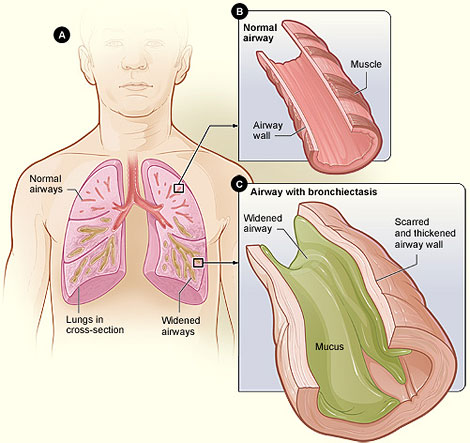

Bronchiectasis

CAUSES
Causes of bronchiectasis include:
- an abnormally functioning immune system
- inflammatory bowel disease
- autoimmune diseases
- chronic obstructive pulmonary disease (COPD)
- alpha 1-antitrypsin deficiency (an inheritable cause of COPD)
- HIV
- allergic aspergillosis (an allergic lung reaction to fungus)
- lung infections, such as whooping cough and tuberculosis
SYMPTOMS
Symptoms of bronchiectasis include:
- chronic daily cough
- coughing up blood
- abnormal sounds or wheezing in the chest with breathing
- shortness of breath
- chest pain
- coughing up large amounts of thick mucus every day
- weight loss
- fatigue
- change in the structure of fingernails and toenails, known as clubbing
- frequent respiratory infections
DIAGNOSIS
Common methods of treating bronchiectasis include:
-
clearing the airways with breathing exercises and chest physiotherapy
-
undergoing pulmonary rehabilitation
-
taking antibiotics to prevent and treat infection (studies are currently being done on new formulations of inhaled antibiotics)
-
taking bronchodilators like albuterol (Proventil) and tiotropium (Spiriva) to open up airways
-
taking medications to thin mucus
-
taking expectorants to aid in coughing up mucus
-
undergoing oxygen therapy
-
getting vaccinations to prevent respiratory infections